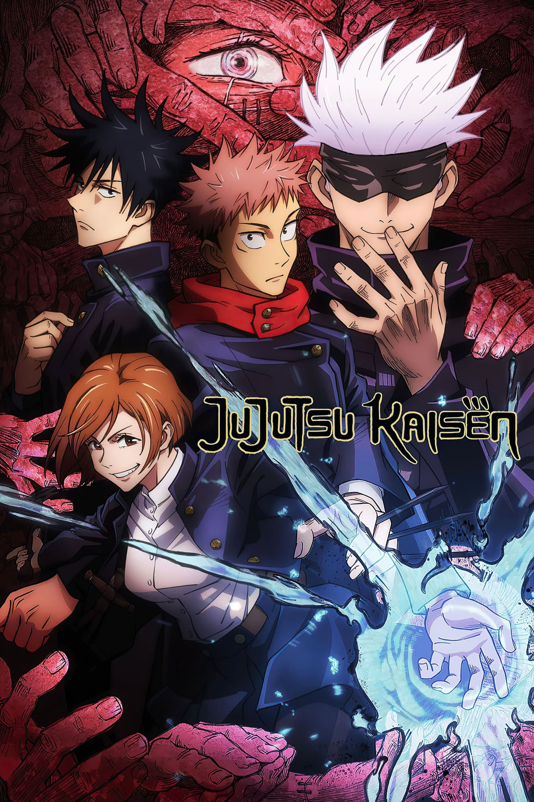

Jujutsu kaisen
تدور قصة أنمي "جوجوتسو كايسن" حول يوجي إيتادوري، طالب في المدرسة الثانوية يتمتع بقوة جسدية هائلة، ينضم إلى منظمة سرية لسحرة الجوجوتسو بعد أن يبتلع إصبعًا ملعونًا ليصبح مضيفًا لروح قوية تُدعى ريومن سوكونا. يهدف يوجي إلى إيجاد جميع أصابع سوكونا وإبطال مفعولها، بينما يقاتل الأرواح الملعونة ويحمي الآخرين.